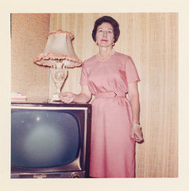
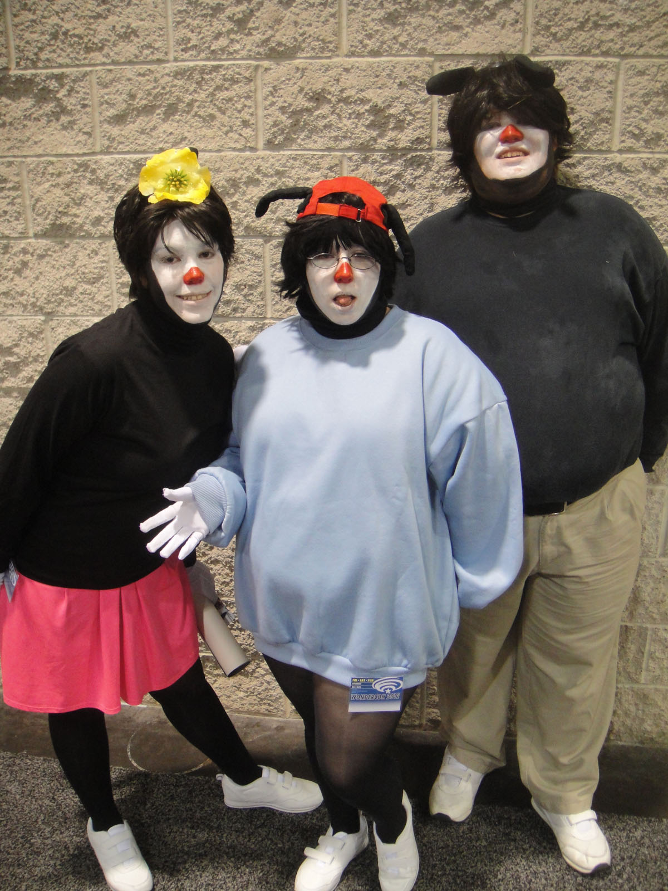

Part one · the top 8
Top 8 parasocial moments in Saturday morning cartoons of the 1990s
Every one of these is a one-sided relationship with a person who does not exist, aimed at a child, on a Saturday, before anybody had a word for it. Ranked by how well it worked.

This is the section nobody argues about, because it started before anyone had an argument. A child watching a cartoon is doing the same thing a forty-year-old watching a stream is doing, and the only difference is that nobody had decided yet whether it counted.
Which of these are you? Eight questions, and the answers are people in the catalogue rather than personality types.
LAW 6 All eight entries are instances of Characters move in, which is the reason they are on one list. Living with Pennywise — A whole video about the fact that horror moves in.
-
1

A Reptar toy. The NEST letter is about wanting proof that a toy shop is real, so a photograph of the toy is closer to the episode than a screenshot would have been. · Chris Hagerman · CC BY-SA 3.0 What happens. Tommy writes to a magazine telling them the NEST was real. The NEST never appears. The letter is never answered. Chuckie and Tommy argue about it and then forget about it and then the episode ends.
Why it is on the list. The single most parasocial thing ever put on television, and it is a joke about wanting the writers to confirm that a fictional place is real. An eight-year-old asking to be told the world is real, dressed up as a joke about a brand of baby food. Everything on this site happens because a child did not accept the terms of the arrangement.
-
2

Rugrat Baby Shower Decor · Sherlene · CC BY 2.0 What happens. The premise of the entire show, which is four toddlers exploring a house while believing they are the size of insects. And they are. The house is as big as a city to them.
Why it is on the list. Rugrats is a parasocial engine pointed at children who could not yet identify the trick. The scale is the relationship: the world is enormous, you are small, and there is always one adult-shaped thing that will explain it. That is the whole emotional structure of the show and most people still have it.
-
3

A cosplayer as Oscar the Grouch, Hallowbaloo 2012. Fans in costume is what Commons actually holds, and on this site that is the better picture: the bond lives in the audience. · Kyle Nishioka · CC BY 2.0 What happens. Oscar the Grouch refused to perform in a fundraiser telethon and was written out of the special for a season. He came back. Millions of children wrote in about it.
Why it is on the list. The cleanest case in television of a fictional character having genuine leverage over the people who own him. Sesame Street is parasocial infrastructure - a generation of people grew up with these characters and still argues about them as if they are relatives - and the grouch episode is that infrastructure noticing it had power.
-
4

Cosplay of Zuko at AVA Expo 2013 · Dasha Ocean · CC BY-SA 2.0 What happens. A character designed as a villain, on a schedule, in a children's cartoon, spends three seasons being the thing the audience hated and then becomes the thing the audience cried about.
Why it is on the list. It is in here for the mechanism rather than the craft. The show put a face on a feeling the audience actually had - being written off, being the person nobody is rooting for - and then let them watch it get better. Tens of millions of people had a parasocial experience with a firebending teenager. Not many children have a better model of redemption than the one a cartoon gave them.
-
55Dragon Talesno free frame exists
What happens. Emperor Kukulkan is a fictional dragon who can only be summoned by a child who believes in him. Every child who believed in him could summon him.
Why it is on the list. The premise is a description of parasocial attachment stated as a children's cartoon premise, and nobody at the time clocked it as one. Believing in something fictional is the mechanism. The show built an entire children's programme on it and treated it as unremarkable, which is exactly why it worked.
-
6

The cast of the Power Rangers film · iDominick · CC BY-SA 2.0 What happens. Five teenagers in spandex, and the entire premise is that a group of people with no special qualities are chosen by a machine to fight monsters. Then the actors leave and new teenagers take the costumes and the audience carries over completely.
Why it is on the list. The parasocial breach in full public view. Millions of children watched actors be replaced and transferred every piece of feeling they had for the character straight to whoever put the suit on. It was the most visible handover of an attachment ever broadcast, running five days a week, and it is the closest thing television has to a controlled experiment.
-
77Dougno free frame exists
What happens. Phil Funutmarsh sits in a dark room in front of the television and is, for a few seconds per episode, allowed to be a person who is merely a father.
Why it is on the list. The show understood that the audience's relationship was not only with Doug. It built the person holding the remote into the fiction, gave him two lines a week, and let a generation of children feel oddly seen by a background character. The parasocial relationship with the dad is the one nobody has ever written about and it was aimed at children.
-
8

The Animaniacs at WonderCon, 2012 · The Conmunity - Pop Culture Geek from Los Angeles, CA, USA · CC BY 2.0 What happens. A whole generation of children said a specific sentence in a specific order with a specific pause in it, for a cartoon rabbit, on Saturday morning.
Why it is on the list. It is last because it is the least about plot and the most about the medium. The line was never written to be repeated. It was a delivery, and an entire cohort of children reproduced it, in unison, years later, without being asked. That is not attachment to a character. That is attachment to a voice, and it is the purest parasocial event in the list.
More top 8s coming, rotated weekly. Back to the ten sections →